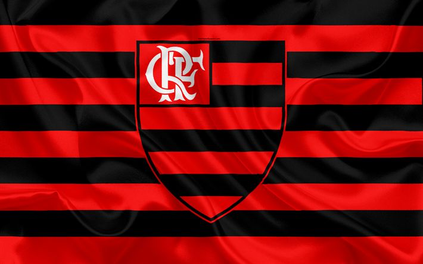
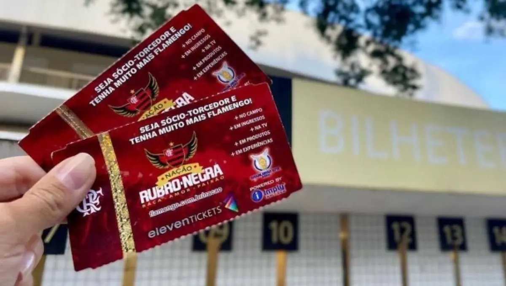
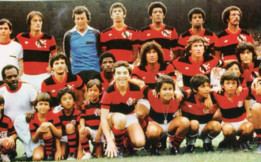
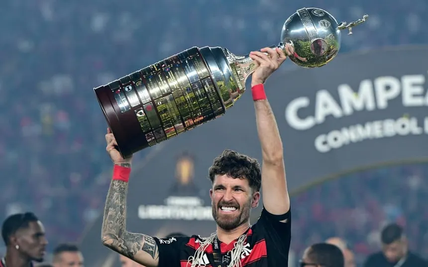

Este é um site não oficial do Flamengo

O Clube de Regatas do Flamengo foi fundado em 1895, no Rio de Janeiro, inicialmente como um clube de remo, e só passou a atuar no futebol em 1911. Ao longo do século XX, tornou-se um dos clubes mais populares e vitoriosos do Brasil, conquistando diversos Campeonatos Brasileiros e Copas do Brasil. Seu período mais marcante ocorreu na década de 1980, quando contou com craques como Zico e venceu a Copa Libertadores e o Mundial Interclubes de 1981. Com uma das maiores torcidas do mundo, o Flamengo manda seus jogos no Estádio do Maracanã e mantém forte tradição no futebol e em outros esportes.
Veja mais da história do Flamengo aqui!
Compre ingressos do proximo jogo do Flamengo aqui: site oficial do Flamengo
veja os jogadores do Flamengo aqui

| Jogador | Posição | Nacionalidade |
|---|---|---|
| Agustín Rossi | Goleiro | Argentina |
| Guillermo Varela | Lateral-direito | Uruguai |
| Léo Pereira | Zagueiro | Brasil |
| Fabrício Bruno | Zagueiro | Brasil |
| Ayrton Lucas | Lateral-esquerdo | Brasil |
| Gerson | Meio-campo | Brasil |
| Arrascaeta | Meio-campo | Uruguai |
| Everton Cebolinha | Atacante | Brasil |
| De la Cruz | Meio-campo | Uruguai |
| Pedro | Atacante | Brasil |
| Allan | Meio-campo | Brasil |
| Bruno Henrique | Atacante | Brasil |
| Matheus Cunha | Goleiro | Brasil |

Este é um site não oficial do Flamengo